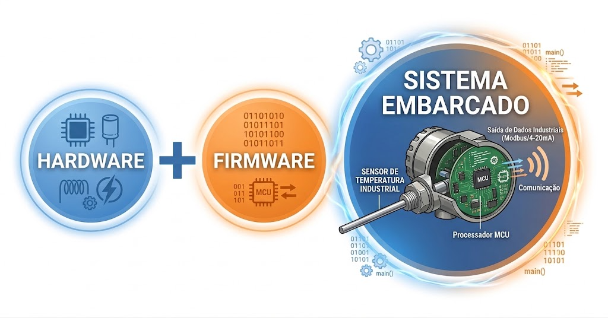
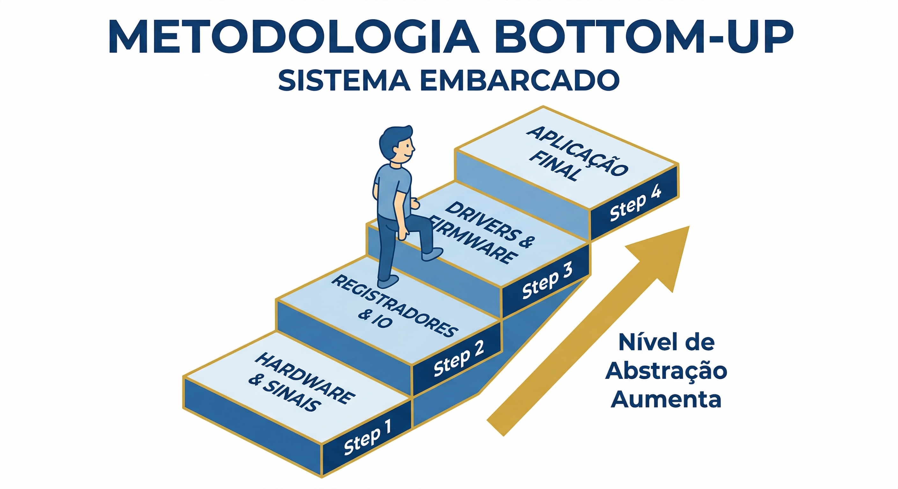
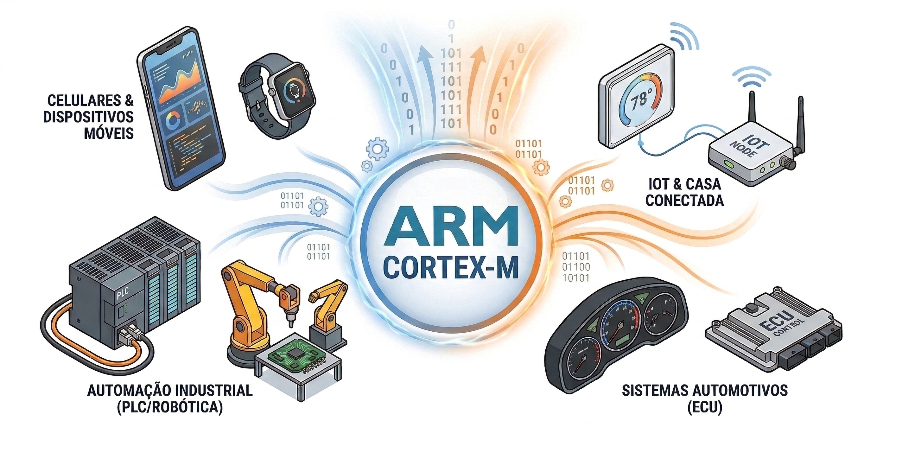
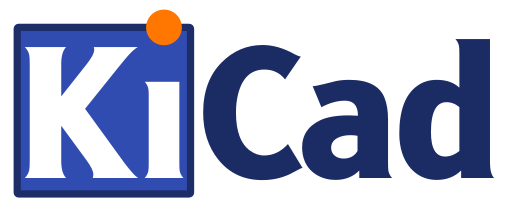
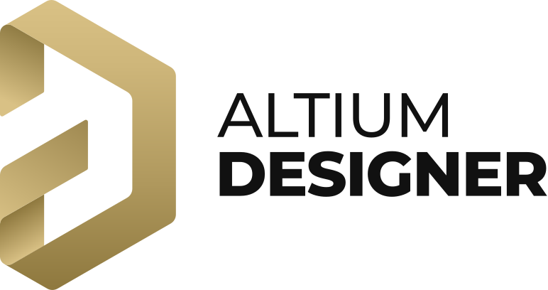
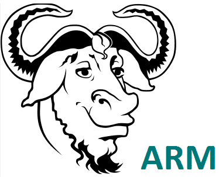

Sistemas Embarcados I - UFU
Introdução
Bem-vindo à disciplina de Sistemas Embarcados I. Este curso foi concebido para proporcionar uma experiência teórico-prática completa, garantindo que, ao final da jornada, você possua o domínio técnico e a autonomia necessários para projetar e desenvolver sistemas embarcados do início ao fim, integrando plenamente hardware e firmware.
O grande diferencial desta disciplina está na abordagem sistêmica: você aprenderá a projetar o hardware — incluindo esquemas eletrônicos e o design de PCBs — em conjunto com o desenvolvimento do firmware, elaborando o código de baixo nível que dá vida ao sistema. Dessa forma, você compreenderá a essência dessas tecnologias, desde seus fundamentos físicos e lógicos até a implementação de soluções robustas em dispositivos de alta complexidade.

Para alcançar esse nível de proficiência, utilizaremos a metodologia Bottom-Up (de baixo para cima). Nesta metodologia, o aprendizado é construído em etapas evolutivas, onde cada fase resolve um desafio técnico real e introduz um novo nível de sofisticação. Nesta abordagem, não utilizamos “caixas pretas”. Em vez disso, cada componente do sistema é compreendido em sua totalidade, desde os circuitos eletrônicos e o design de hardware até a programação de baixo nível e a integração de sistemas. A cada etapa, você enfrentará desafios técnicos reais, como a implementação de um driver para um periférico específico ou a otimização do consumo de energia, garantindo que o aprendizado seja prático, relevante e alinhado com as demandas do mercado.

Diferente da plataforma Arduino, que agiliza o desenvolvimento ao esconder a complexidade do hardware através de abstrações de alto nível — como as funções delay() ou millis() que mascaram o funcionamento real dos timers e registradores — nosso foco é a transparência total. Aqui, você não utilizará funções de temporização ou bibliotecas prontas sem antes dominar o hardware e o firmware que as sustentam, compreendendo exatamente como os periféricos interagem com o núcleo do processador.
Essa metodologia permite vivenciar os desafios reais da engenharia, como a gestão otimizada de recursos limitados, a depuração em nível de hardware e a criação de interfaces que unem eficiência e manutenibilidade. Ao escalar cada camada da arquitetura, você compreenderá a fundamentação técnica por trás de cada decisão de design, transformando a complexidade em um processo de desenvolvimento lógico, estruturado e profissional.
O curso é fundamentado na arquitetura ARM Cortex-M, o padrão de facto na indústria global de tecnologia. A escolha desta plataforma não é apenas uma decisão pedagógica, mas um alinhamento estratégico com as demandas reais do mercado de engenharia:
Liderança Absoluta de Mercado: Com um ecossistema que movimenta mais de 30 bilhões de chips anualmente, a arquitetura ARM sustenta cerca de 90% dos dispositivos móveis do mundo e é a espinha dorsal da eletrônica automotiva e industrial moderna. Estudar ARM é aprender a tecnologia que move o planeta.
Controle Profissional vs. Prototipagem (ARM vs. Arduino): Enquanto plataformas como o Arduino (AVR) são excelentes portas de entrada para o hobby, o ARM Cortex-M oferece os recursos exigidos em produtos comerciais de alta performance. Aqui, exploramos o controle total sobre o hardware através do acesso direto a registradores, DMA e gerenciamento avançado de energia, competências essenciais para o desenvolvimento de produtos otimizados e escaláveis.
Determinismo e Confiabilidade (ARM vs. ESP32): Embora o ESP32 seja uma ferramenta poderosa para IoT, a linha ARM (como os STM32) oferece um ecossistema de depuração (Debug) profissional via SWD/JTAG incomparável. Isso permite ao engenheiro analisar o ciclo de instrução e garantir o determinismo temporal em sistemas críticos, onde falhas de milissegundos não são uma opção.
Versatilidade e Independência de Fabricante: Dominar o conjunto de instruções e a arquitetura ARM permite que transite livremente entre os maiores fabricantes de semicondutores do mundo (STMicroelectronics, NXP, Texas Instruments, Renesas). Você não aprende a programar um chip específico, mas sim a arquitetura que define o padrão global da engenharia de sistemas embarcados.

Ecossistema de Desenvolvimento
Para as atividades práticas, utilizaremos ferramentas profissionais que priorizam o controle total sobre o ciclo de desenvolvimento e a visibilidade direta do hardware. Essas ferramentas permitem que você tenha acesso detalhado a cada etapa do processo, desde o projeto inicial do circuito até a programação e depuração do firmware, proporcionando uma compreensão profunda dos mecanismos internos do sistema.
Ao optar por ambientes de desenvolvimento avançados — como editores extensíveis, toolchains profissionais e depuradores de baixo nível — é possível analisar o funcionamento dos periféricos, monitorar o estado interno do processador e identificar possíveis gargalos de desempenho, tudo em tempo real diretamente no hardware real. Assim, você estará preparado para enfrentar situações reais de engenharia, ajustando parâmetros, otimizando recursos e implementando soluções robustas. O uso dessas ferramentas profissionais também favorece a colaboração em projetos complexos, facilitando a documentação do processo e a integração entre equipes multidisciplinares. Dessa maneira, garantimos que o aprendizado seja não apenas prático, mas também alinhado com as exigências do mercado e com os padrões de qualidade internacional.
Ferramentas para Projeto de Hardware
O desenvolvimento de hardware moderno é indissociável das ferramentas EDA (Electronic Design Automation). Estes ecossistemas automatizam a transição entre o conceito teórico e a implementação física, sendo indispensáveis para projetar, simular e validar esquemas eletrônicos com rigor técnico. Através de recursos avançados — como a verificação de regras elétricas (ERC) e de layout (DRC), visualização 3D e exportação de arquivos Gerber — as ferramentas EDA garantem que o layout da PCB possua a precisão necessária para a fabricação industrial. O domínio destas ferramentas é o que permite transformar circuitos complexos em produtos funcionais e confiáveis, assegurando a integração perfeita entre o hardware e o firmware em projetos de sistemas embarcados.
Para colocar esses conceitos em prática, poderemos utilizar ferramentas que abrangem desde o ecossistema open-source até ferramentas que atendem aos padrões mais elevados da indústria. O KiCad será nossa base para o aprendizado de design de PCBs, oferecendo uma plataforma robusta e sem restrições de licenciamento. Para projetos que exigem uma integração profunda entre a eletrônica e o design mecânico, exploraremos o Autodesk Fusion 360, enquanto o Altium Designer se apresenta como uma solução de ponta para roteamento avançado e fluxos de trabalho profissionais. Cada uma dessas ferramentas tem suas vantagens e desvantagens, e a escolha entre elas dependerá do contexto do projeto, dos requisitos técnicos e das preferências pessoais. O importante é que, independentemente da ferramenta escolhida, o foco estará sempre na compreensão profunda dos princípios de design de hardware e na capacidade de criar soluções eficientes e escaláveis para sistemas embarcados.
KiCad EDA

- Vantagens: Totalmente open-source, sem custos de licenciamento e com uma comunidade global vibrante. Possui um gerenciador de bibliotecas flexível e não impõe restrições ao tamanho da placa.
- Desvantagens: Interface pode parecer menos intuitiva para quem vem de ferramentas comerciais; recursos de simulação nativa e roteamento interativo são menos avançados que soluções de ponta.
Autodesk Fusion 360
- Vantagens: Integração nativa incomparável entre o design eletrônico (ECAD) e o design mecânico (MCAD). Excelente visualização 3D e facilidade para projetar gabinetes e caixas.
- Desvantagens: Modelo de assinatura (licença gratuita limitada para estudantes); forte dependência de processamento em nuvem e conexão estável com a internet.
- Atenção: Estudantes universitários podem acessar o Autodesk Fusion 360 Education License, que oferece uma licença gratuita de um ano (renovável) para uso acadêmico, garantindo acesso a todas as funcionalidades avançadas da plataforma.
Altium Designer

- Vantagens: O padrão ouro da indústria. Possui ferramentas de roteamento interativo extremamente poderosas, gerenciamento avançado de regras de design (DRC) e é focado em produtividade para projetos profissionais de alta complexidade.
- Desvantagens: Custo de licenciamento elevado; exige hardware potente para execução fluida; curva de aprendizado mais íngreme para dominar todas as funcionalidades avançadas.
- Atenção: Através do programa Altium Student License, estudantes universitários podem solicitar uma licença educacional gratuita de seis meses (renovável), garantindo acesso à mesma tecnologia utilizada pelas grandes empresas.
Ferramentas para Desenvolvimento de Firmware
O desenvolvimento de firmware para sistemas embarcados exige o uso de ferramentas específicas que facilitam a criação, compilação e depuração do código. Em nossa disciplina, evitaremos o uso de IDEs proprietárias — como o STM32CubeIDE e até mesmo de plugins de configuração automática, como o novo STM32 VS Code Extension. Optamos por este caminho para garantir que você não dependa de geradores de código automáticos que escondem a complexidade do hardware. Ao configurar seu próprio ambiente, você compreende exatamente como o linker script, os arquivos de inicialização e os scripts de depuração funcionam, tornando seu conhecimento portável para qualquer outra arquitetura ou fabricante. A instalação e a configuração detalhada de cada um desses componentes, bem como a integração entre eles para formar um ambiente de desenvolvimento funcional, serão temas das nossas atividades práticas.
Visual Studio Code

O Visual Studio Code (VS Code) consolidou-se como o editor preferencial para o desenvolvimento de firmware moderno, substituindo IDEs proprietárias que muitas vezes são pesadas e pouco flexíveis. Seu grande trunfo reside na arquitetura extensível: através de extensões como a Cortex-Debug e o suporte nativo à linguagem C/C++, ele se transforma em uma estação de trabalho completa que integra edição, compilação e depuração em um único fluxo.
Diferente de ferramentas “clicou, funcionou”, o uso do VS Code em sistemas embarcados exige que o desenvolvedor compreenda a integração entre o editor, a toolchain (GCC) e o depurador (GDB/OpenOCD). Essa transparência é pedagógica e profissional, pois permite o monitoramento detalhado de registradores, memória e periféricos em tempo real. Além disso, a integração nativa com o Git e o terminal embutido para execução de Makefiles torna o desenvolvimento ágil, organizado e totalmente alinhado com as melhores práticas da engenharia de software atual.
GNU ARM Toolchain

O GNU Arm Embedded Toolchain é o coração técnico do desenvolvimento profissional para microcontroladores ARM Cortex-M. Diferente de compiladores para desktop, ele é uma ferramenta de compilação cruzada (cross-compilation): ele roda em sua máquina host, mas gera código binário específico para o alvo ARM.
Diferente de ferramentas como Keil MDK ou IAR Embedded Workbench, que são ecossistemas fechados e de alto custo, a utilização da Toolchain GNU oferece:
Independência de Fornecedor: Ferramentas proprietárias costumam criar dependências de arquivos de projeto e bibliotecas que “prendem” o desenvolvedor. Com o GCC, seu projeto é portável entre diferentes fabricantes (ST, NXP, TI).
Ausência de Restrições: Muitas IDEs comerciais limitam o tamanho do binário (ex: limite de 32KB na versão gratuita do Keil). A toolchain GNU é totalmente gratuita e ilimitada, permitindo projetos de qualquer escala.
Transparência Total: Enquanto as IDEs proprietárias utilizam “botões mágicos” para configurar o hardware, o uso do GCC nos obriga a manipular o Linker Script e os arquivos de Startup. Isso garante que você entenda exatamente onde cada byte do seu código está sendo alocado na memória Flash ou RAM.
Padrão de Indústria: O arm-none-eabi-gcc é o motor por trás da grande maioria das ferramentas modernas e servidores de Integração Contínua (CI/CD), sendo o requisito padrão para engenheiros de sistemas embarcados em nível global.